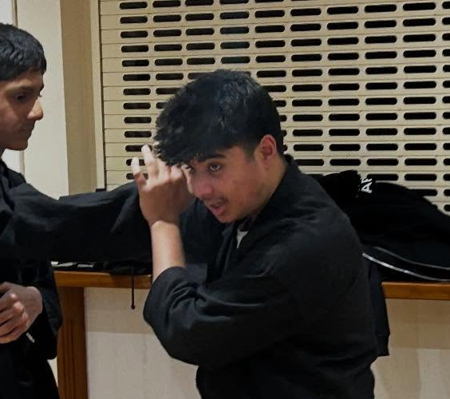
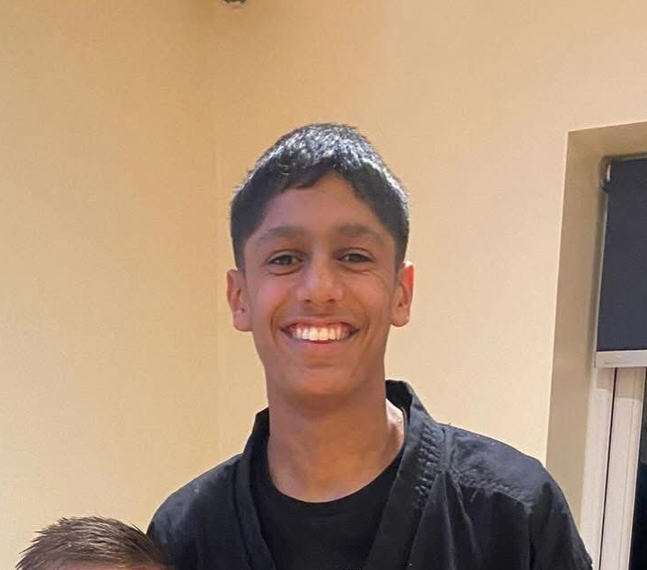
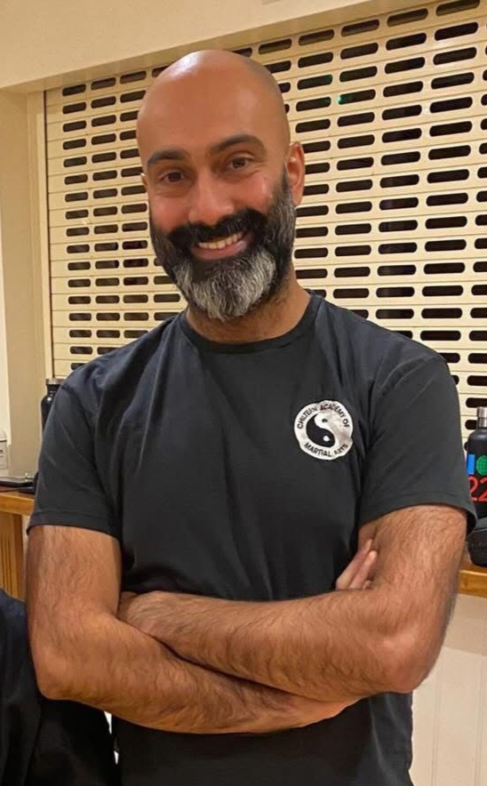

Mark Lane
Founder & Head SifuMark is the founder of the Chiltern Academy of Martial Arts. Martial arts has been a lifelong passion for Mark, and the dream of creating his own academy dates back to his teens. This vision came to fruition in 2018 when he established the Academy, starting with zero students. Today, the Academy proudly trains over 200 students.
Mark began his martial arts journey in 1972 with judo, achieving his first black belt in 1978. He went on to win the BJC National Championships and competed for the national team. In addition to judo, he holds black belts in Jeet Kune Do, Shotokan Karate, Irish Stick Fighting, and Dacayana Kali, and he also teaches Tai Chi.
As a Wing Chun instructor, Sifu Mark continues his training under Master Clive Potter, a first-generation student of the legendary Wong Shun Leung with over 50 years experience.
Mark is also a highly accomplished powerlifter, having won the World Drug-Free Championships multiple times and held several world records. In 2013, he was inducted into the Irish Drug-Free Powerlifting Association Hall of Fame.

Karl Harcourt
Instructor — "The Immovable"Karl's martial arts history started in his early teens with Okinawan Goju Ryu Karate. After a few years he had a brief spell at Judo and Jiu Jitsu before training in Muay Thai. He has now been training under CAMA since 2021.
He has worked in the security sector for a number of years where he gained a vast knowledge of self defence, restraints and crowd control skills. Karl now teaches in the training of both children and adults at multiple classes for CAMA.
Otherwise known as "the Immovable", Karl has a very distinct style and presence about him and has attained his Brown Sash.

Paul Brown
Kung Fu Instructor — Black SashPaul teaches both the kids and Adult Kung Fu classes in Holmer Green & Hazlemere. Paul is a black sash, certified to instruct under Cobra Martial Arts Association, and is a very experienced martial artist.
Inspired by Ip Man, and after doing some research, he found CAMA in July 2021 and trained as often as practical. Achieving black sash in Nov 2023 is only the beginning and further learning and understanding to a much deeper level is now his mission with the help and guidance of Sifu Mark and Sigung Clive Potter.
Paul used to do a cage fighting style in his 20s and Jiu-Jitsu for a short time.

Robert Avery
Instructor — 5th Dan Black BeltRobert has been training in martial arts since the age of 16. Originally practising Shotokan and Kyokushin karate, he has a 5th Dan black belt in jujitsu/kickboxing from Combat Academy UK, along with his Black Sash in Wing Chun and two qualifications in Japanese Kobudo.
In addition to his kung fu, Robert also now trains in and teaches Kozoku Jujitsu.

Stefan Saleem
Instructor — Junior ClassesStefan achieved his black belt in 1996 in Tai Jitsu (Traditional Jiu Jitsu). He currently teaches self defence as part of his job role. Has done boxing, trains in free style wrestling, Brazilian Jui Jitsu and Wing Chun which is under Mark Lane.
He currently runs his own junior classes on a Friday. Not only wants to pass his knowledge onto other people but also wants to learn and achieve more himself.

Victor Webber
Judo Coach — 4th Dan Black BeltVic is one of our coaches for the judo classes. Vic is a black belt 4th dan and has been doing judo for over 50 years, achieving his black belt in 1978.
He has places in the National kata championships. He currently runs a First Aid training company.

Si-Hing Yusuf
Si-HingYusuf holds the honour of being the very first Black Belt in the academy. He is incredibly passionate about his training and is always eager to continue learning and sharing his knowledge with others. He has a deep love for Judo, Wing Chun, and intense sparring and conditioning sessions.

Si-Hing Nik
Si-HingNik is a lightning-fast fighter who is always eager to learn and improve. Known for his warm heart and permanent smile, he genuinely wants the best for everyone around him. He is always trying his absolute best to help others and brings a loving, positive energy to the academy.

Si-Hing Satchin
Si-HingArmed with a degree in Physics, Satchin brings a highly analytical approach to his training. He is constantly finding innovative ways to implement the laws of physics directly into his Wing Chun techniques, making him a deeply technical and fascinating martial artist.